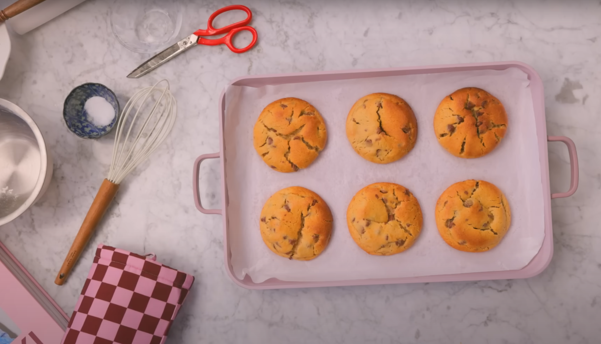

Description
This is the choc chip cookie recipe that broke the internet. No really! This choc chip cookie recipe changed my life. After selling thousands of these cookies and shipping them all around the world, I'm bringing you inside my home kitchen to share how you can make this recipe from home.
Ingredients
- 200 g unsalted butter, room temperature
- 180 g light brown sugar
- 80 g caster sugar
- 1 large egg (52g), room temperature
- 250 g self-raising flour
- 200 g plain flour
- pinch of salt
- 1 tsp baking powder
- 300g milk chocolate chips
Steps
- First, combine butter, brown sugar, and castor sugar in a bowl [00:36]. Mix until just combined, being careful not to overmix [01:30].
- Add one large egg [01:59].
- Incorporate self-raising flour, plain flour, baking powder, and a pinch of salt [02:17]. Mix until just combined [03:00].
- Mix in your choice of chocolate chips [03:15].
- Weigh each cookie dough ball. For large cookies, use 150g per cookie, yielding eight cookies from the batch [04:14].
- Do not roll the dough into perfect balls; keep them messy to ensure even baking [04:51].
- Place the dough balls on a baking tray [05:31].
- Chill the dough in the fridge for 3 hours to overnight, or freeze for 20-30 minutes if you're in a rush [06:05]. Extra dough can be frozen for up to 1 month [05:54].
- Bake at 180°C for 15-16 minutes, until golden on top and soft in the center [06:20].
- Let the cookies cool for 10-15 minutes before eating [06:51].
Home